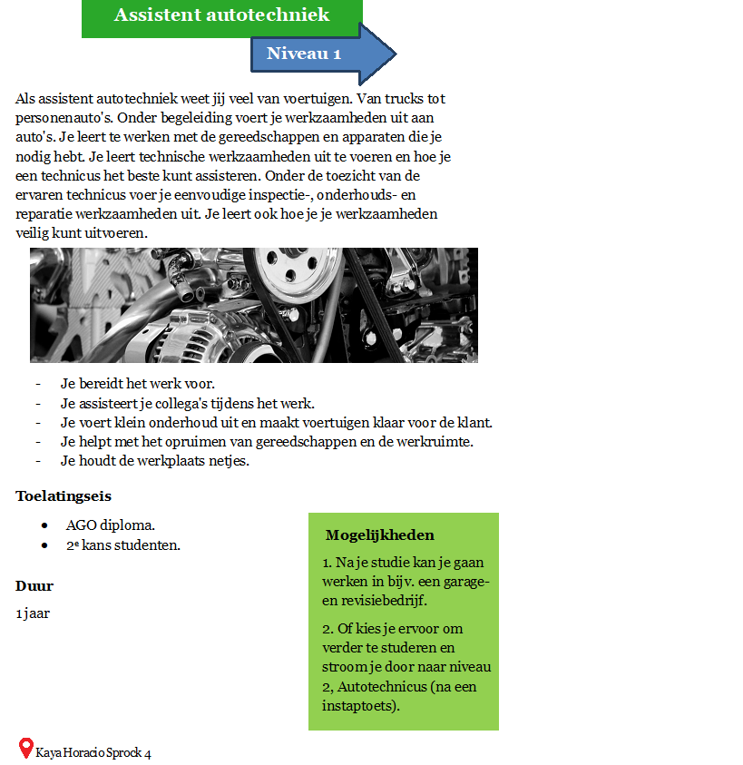
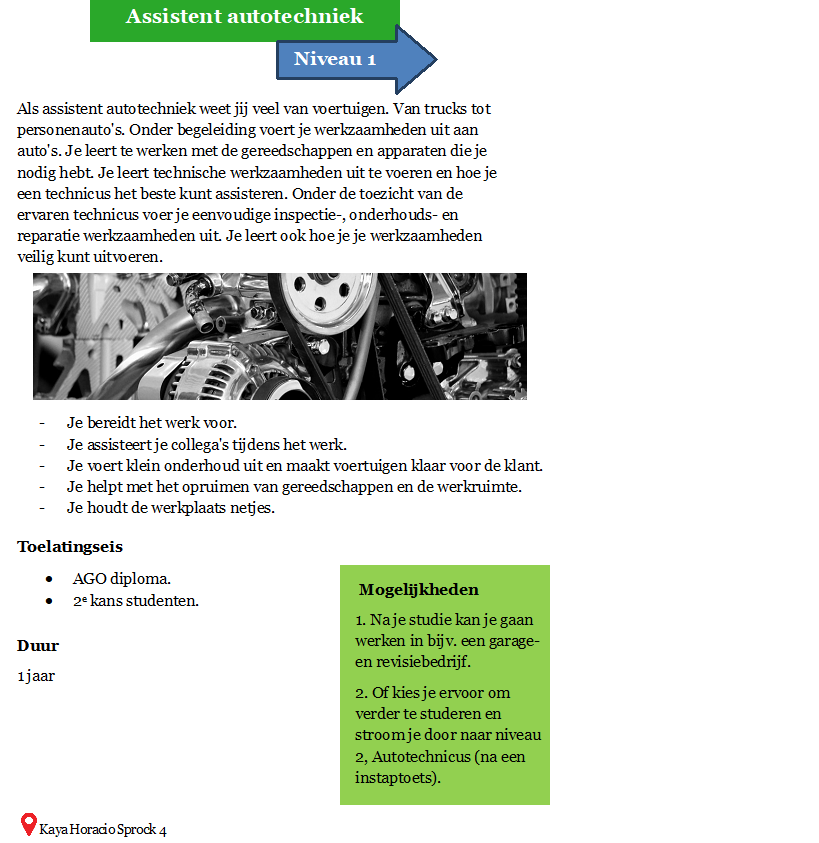

Nilda Pinto SBO biedt opleidingen aan binnen het SBO op verschillende niveaus en in de volgende studierichtingen:
Verder vind je in deze brochure alle studierichtingen terug met hun bijbehorende opleidingen.
Ook wordt alle informatie over de inhoud van de opleiding, toelatingseisen, stage (beroepspraktijkvorming) etc. gegeven.
